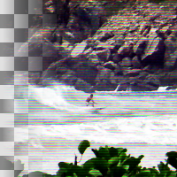

Video Degradation
This function simulates the degradation of being on an old low-dotpitch RGB video monitor.
Pattern
Type of RGB pattern to use
name: pattern
type: enum
Additive
Whether the function adds the result to the original image.
name: additive
type: boolean
default: True
Rotated
Whether to rotate the RGB pattern by ninety degrees.
name: rotated
type: boolean
default: False
pads: input output
parent-class: GeglOperationPointFilter
categories: distort
source: operations/common-gpl3+/video-degradation.c
license: GPL3+
 This page is part of the online GEGL Documentation, GEGL is a data flow based image processing library/framework, made to fuel GIMPs high-bit depth non-destructive editing future.
This page is part of the online GEGL Documentation, GEGL is a data flow based image processing library/framework, made to fuel GIMPs high-bit depth non-destructive editing future.